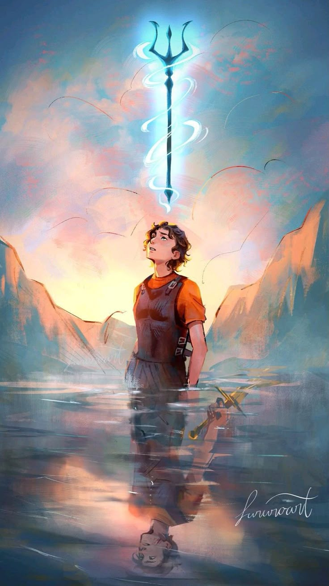

Perseus Jackson

About Percy Jackson
Percy Jackson is the demigod son of Poseidon and the main character of Rick Riordan's Percy Jackson and the Olympians series.
He spends most of his childhood being kicked out of schools and assuming he's just a troublemaker, until he learns at twelve that the Greek gods are real and that he's one of their children.
What follows is a run of quests across a modern America where monsters hide in plain sight and Olympus sits above the Empire State Building.
- I like that Percy's dyslexia and ADHD turn out to be signs of who he is rather than things wrong with him.
- He stays funny and sarcastic even when the situation is genuinely dire, which makes him easy to root for.
- He consistently chooses loyalty to his friends over glory, even when the smarter move would be to leave them behind.